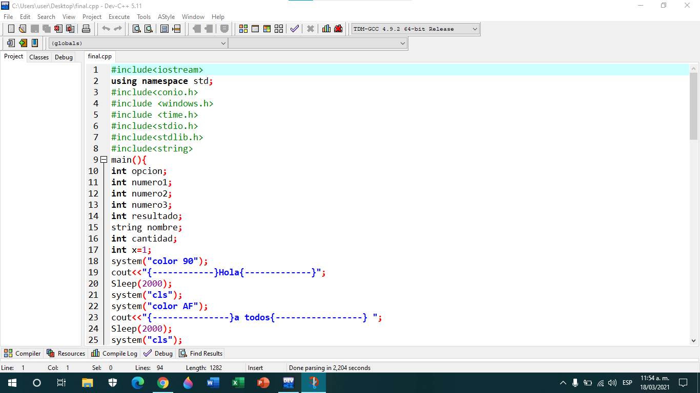
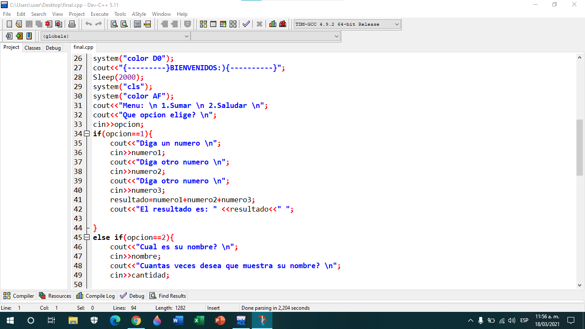
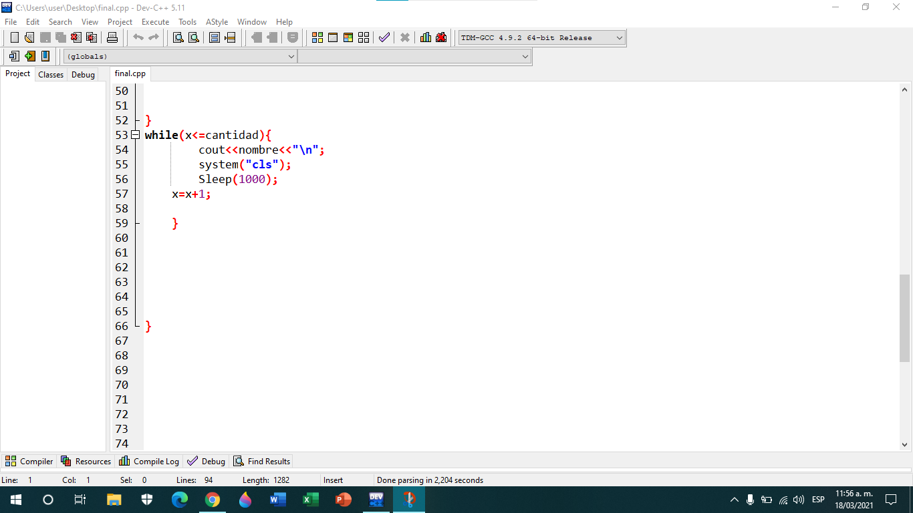
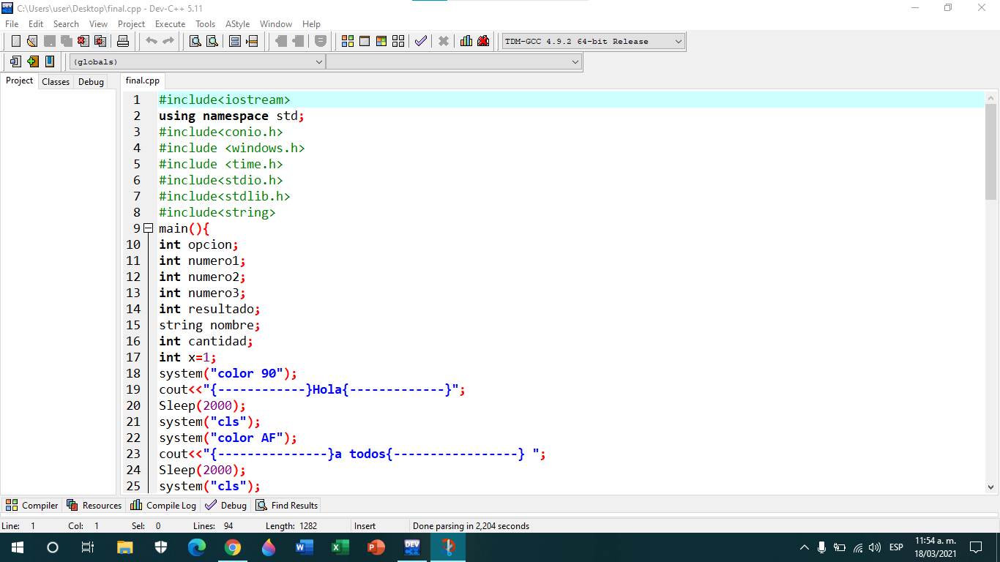
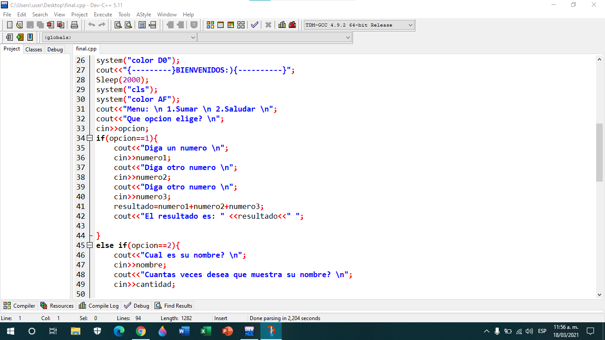
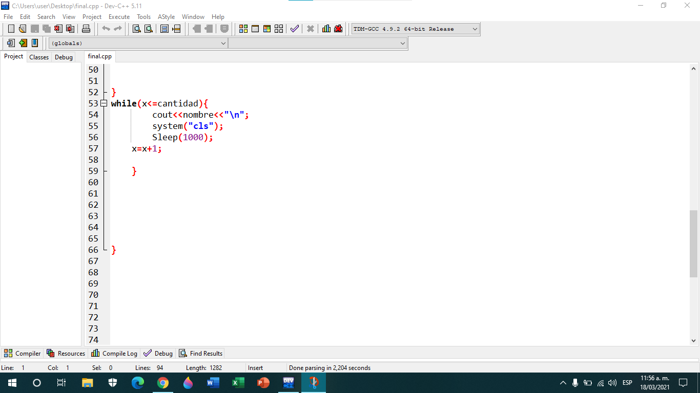

Periodo 1
 Actividad 2 (Informe)
Actividad 2 (Informe)
.png)
 ACTIVIDAD 3
ACTIVIDAD 3


 Actividad 4
Actividad 4
 Profe al final del algoritmo yo si puse la } para cerrar el main, solo que en la imagen no se ve porque al tomar el recorte no me alcanzo para que quedara
ACTIVIDAD 5
Profe al final del algoritmo yo si puse la } para cerrar el main, solo que en la imagen no se ve porque al tomar el recorte no me alcanzo para que quedara
ACTIVIDAD 5


 Final



El final me parecio muy sencillo, cuando lo estaba haciendo me senti muy tranquilo y seguro ya que habia repasado mucho, la aplicacion que se creo para desarrollar el parcial me parecio muy creativa, ya que incluye todos los temas de c++ que hemos visto durante el periodo
Final



El final me parecio muy sencillo, cuando lo estaba haciendo me senti muy tranquilo y seguro ya que habia repasado mucho, la aplicacion que se creo para desarrollar el parcial me parecio muy creativa, ya que incluye todos los temas de c++ que hemos visto durante el periodo